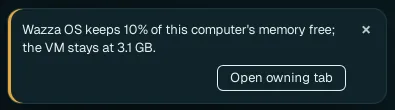

Memory, CPU and disk
Wazza OS does not reserve your computer for its VM. The VM starts small, takes memory and processors when its apps need them, up to a limit, and gives them back when it is idle. Your own apps keep working, and heavy work in the VM still gets what it needs.
Limits, not reservations#
| Resource | At the VM's start | While it runs | The limit, by default |
|---|---|---|---|
| Memory | What its desktop needs, fitted to what is free | Grows when its apps need more, gives back when idle | 75 % of the memory free now (counting what the VMs hold), never below 8 GB when your computer has that much |
| Processors | 2 | More while its programs wait for processor time | 75 % of your computer's threads |
| Disk | The space it already uses | Grows as files are written; never shrinks | 50 % of the free space of the drive that holds it |
| Graphics card | Shared with your computer | Used as its apps draw | Graphics memory: 50 % of what is free, where Linux can bound it (6.14 or newer) |
A high limit costs nothing until it is used. Change the limits in Settings › VM resources; with several VMs running, the limits are shared between them.
See what is used#
- The VM card at the bottom of the Home menu: the VM's CPU and its memory used of its limit now (The VM card).
- A tab's card: hold the pointer over a tab to see what it uses: memory and CPU, split between its app and its Chat (The tab card).
- Settings › This computer › Usage: CPU, memory, video memory and disk of your computer and of the VM.
- From a terminal:
wazza --gui vm-resources,wazza --gui vm-memory status.
When memory is short#
Wazza OS keeps 10 % of your computer's memory free for your computer itself. When the VM would need more than that leaves, it stops growing, and a notice says so:

| Notice | What it means | What to do |
|---|---|---|
| Wazza OS keeps 10% of this computer's memory free; the VM stays at … GB. | The VM wanted more memory, and your computer has no more to give without slowing down. | Nothing, if the VM's apps keep working. Otherwise close apps on your computer, or tabs in Wazza OS you do not need. Open owning tab shows the tab that asked for memory. |
| Your computer is almost out of memory and the VM may stop. Close apps you do not need on this computer. | Your computer itself is running out. | Close apps on your computer now; save your work in the VM. |
| Not enough free memory to start the VM | At start, too little memory is free for the VM's desktop. | The card names the apps that use the most memory: close one or two, then start again. |
| The VM can use up to N processors after its next restart. | A change of processors waits for the next start. | Restart the VM when it suits you (Restart). |
Memory also limits how many agents work at once: past the first helper agent, no new one starts while the VM is short of memory (Several agents at once › Limits).
Laptops and small computers#
- Lower the memory limit (for example Auto 50 %) and the processors (Half · 50 %) in VM resources, then Save and apply (memory and processors apply at once).
- Lower General › Max frame rate to 60: drawing app tabs costs less.
- Close tabs you do not use: each open app runs in the VM.
- Glass Off and Reduce motion save a little drawing work too.
Disk space#
The VM's disk is a file on your computer that grows as the VM writes, up to its limit, and never shrinks: deleting files in the VM frees space inside the VM, not on your computer. To see its size: the VM's row in Virtual machines. To get space back, move what you want to keep out of the VM, then reset or remove that VM (vm-2 to vm-8), or back it up first. Wazza OS itself takes about 8 GB.